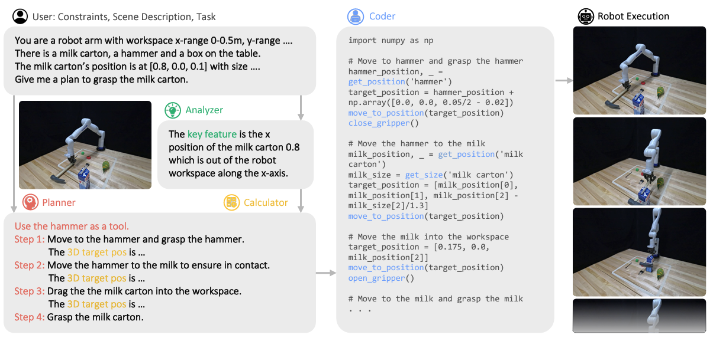

|
I am a Master Student advised by Peide Huang and supervised by Ding Zhao (SafeAI Lab) at Carnegie Mellon University.
Previously, I was a Research Assistant at Multi-Agent Robotic System Lab , under the guidance of Xubo Lyu and Prof.Mo Chen.
Email / CV / Google Scholar / Linkedin / Twitter |

|
News
| 2023/08 - Our paper about using LLMs+Robotics+Tool Use is online now! Also check the twitter post for interesting demos and join the discussion! |
| 2023/08 - Our paper about closing the sim-to-real gap thourgh causal discovery got accepted by CoRL 2023 for a poster presentation, congratulations to Peide! |
| 2023/08 - Our paper about continual vision-based RL got accepted by CoRL 2023 for an oral presentation, congratulations to Shiqi and Mengdi! |
Selected Publications

|
Conference on Robot Learning (CoRL), 2023. (oral, 6.6%) * indicates equal contribution. Abridged in RSS 2023 Workshop on Symmetries in Robot Learning. [paper] [webpage] |

|
Conference on Robot Learning (CoRL), 2023. * indicates equal contribution. Abridged in IROS 2023 Workshop on Causality for Robotics: Answering the Question of Why. [paper] [webpage] |
|  |
arxiv, under review * indicates equal contribution. Abridged in CoRL 2023 Workshop on Language and Robot Learning. [paper] [webpage] |
Teaching
| Course Assistant of 24-767 Modern Control: Theory and Design, Carnegie Mellon University, Fall 2023 |
|
|